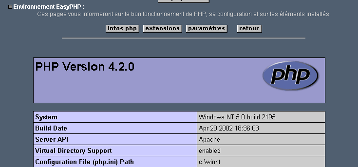
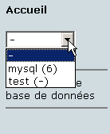
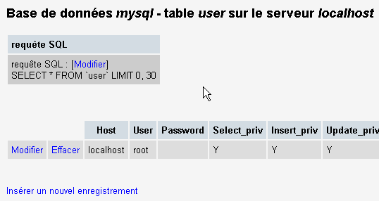
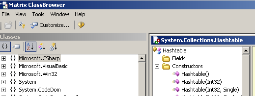
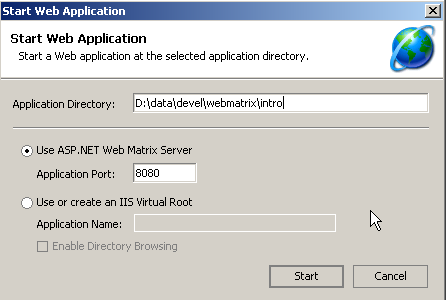

10. Apéndices - Herramientas de desarrollo web
Aquí indicamos dónde encontrar y cómo instalar herramientas gratuitas para el desarrollo web en Java, PHP, ASP y ASP.NET. Algunas herramientas han sido actualizadas, por lo que es posible que las instrucciones que aquí se ofrecen ya no sean válidas para las versiones más recientes. Los lectores deberán adaptarse en consecuencia... :
- a reciente navegador capaz de mostrar XML. Los ejemplos de este curso se han probado con Internet Explorer 6.
- Un reciente JDK (Kit de desarrollo de Java). El JDK incluye el complemento de navegador Java 1.4, que permite a los navegadores mostrar applets Java utilizando el JDK 1.4.
- A Entorno de desarrollo Java para escribir servlets Java. Aquí utilizamos JBuilder 7.
- Servidores web: Apache, PWS (Servidor Web Personal, Cassini), Tomcat.
- Apache puede utilizarse para desarrollar aplicaciones web en PERL (Practical Extracting and Reporting Language) o PHP (Personal Home Page)
- PWS puede utilizarse para desarrollar aplicaciones web en ASP (Active Server Pages) o PHP en plataformas Windows. Cassini permite el desarrollo en ASP.NET.
- Tomcat se utiliza para desarrollar aplicaciones web mediante servlets Java o JSP (Java Server Pages)
- A sistema de gestión de bases de datos: MySQL
- EasyPHP: una herramienta que combina el servidor web Apache, el lenguaje PHP y el MySQL DBMS
10.1. Servidores web, navegadores, lenguajes de programación
- Principales servidores web
- Apache (Linux, Windows)
- Internet Information Server (IIS) (NT), Personal Web Server (PWS) (Windows 9x), Cassini (plataformas NET)
- Principales navegadores
- Internet Explorer (Windows)
- Netscape (Linux, Windows)
- Mozilla (Linux, Windows)
- Opera (Linux, Windows)
- Lenguajes de programación del lado del servidor
- VBScript (IIS, PWS)
- JavaScript (IIS, PWS)
- Perl (Apache, IIS, PWS)
- PHP (Apache, IIS, PWS)
- Java (Apache, Tomcat)
- .NET idiomas
- Lenguajes de programación del navegador
- VBScript (IE)
- JavaScript (IE, Netscape)
- PerlScript (IE)
- Java (IE, Netscape)
10.2. Dónde encontrar las herramientas
http://www.netscape.com/ (enlace de descargas) | |
http://www.microsoft.com/windows/ie/default.asp | |
http://www.mozilla.org | |
http://www.php.net | |
http://www.activestate.com | |
http://msdn.microsoft.com/scripting (siga el enlace Windows Script) | |
http://java.sun.com/ | |
http://www.apache.org/ | |
incluido en el paquete de opciones NT 4.0 para Windows 95 incluido en el CD de Windows 98 http://www.microsoft.com/ntserver/nts/downloads/recommended/NT4OptPk/win95.asp | |
http://www.microsoft.com | |
http://jakarta.apache.org/tomcat/ | |
http://www.borland.com/jbuilder/ | |
http://www.easyphp.org/ | |
http://www.asp.net |
10.3. EasyPHP
Esta aplicación es muy práctica porque incluye lo siguiente en un solo paquete:
- el servidor web Apache
- un intérprete PHP
- el MySQL DBMS (3.23.x)
- una herramienta de administración MySQL: PhpMyAdmin
La aplicación de instalación tiene este aspecto:

La instalación de EasyPHP es sencilla y se crea una estructura de directorios en el sistema de archivos:

el ejecutable de la aplicación | |
la estructura de directorios del servidor Apache | |
el directorio de la base de datos MySQL | |
la estructura de directorios de la aplicación phpMyAdmin | |
la estructura de directorios PHP | |
raíz del árbol de directorios de las páginas web servidas por el servidor EasyPHP Apache | |
donde puede colocar los scripts CGI para el servidor Apache |
La principal ventaja de EasyPHP es que la aplicación viene preconfigurada. Así, Apache, PHP, y MySQL ya están configurados para trabajar juntos. Cuando inicie EasyPHP a través de su acceso directo en el menú Programas, aparece un icono en la esquina inferior derecha de la pantalla.
 |
La "E" con un punto rojo debe estar parpadeando si el Apache y el servidor web MySQL de la base de datos. Al hacer clic con el botón derecho se abre un menú con las siguientes opciones:

En Administración le permite configurar los ajustes y realizar pruebas de funcionalidad:

10.3.1. al configuración del intérprete PHP
En PHP Información debería permitirle verificar que la combinación Apache-PHP funciona correctamente: debería aparecer una página de información PHP:

En Extensiones muestra una lista de las extensiones PHP instaladas. Se trata en realidad de bibliotecas de funciones.

La pantalla anterior muestra, por ejemplo, que las funciones necesarias para utilizar la base de datos MySQL están presentes.
En "Ajustes" muestra la nombre de usuario y contraseña para el administrador de la base de datos MySQL.

El uso de la base de datos MySQL está más allá del alcance de esta rápida visión general, pero está claro aquí que se debe establecer una contraseña para el administrador de la base de datos.
10.3.2. Administración de Apache
Todavía en la página de administración de EasyPHP, el botón "Sus alias" link le permite definir alias asociados a un directorio. Esto le permite colocar páginas web fuera del directorio www en el árbol de directorios EasyPHP.

Si, en la página anterior, introduce la siguiente información:

y haga clic en el botón "Validar" se añaden las siguientes líneas al <easyphp> <easyphp> <easyphp><easyphp> archivo:
Alias /st/ "e:/data/serge/web/"
<Directory "e:/data/serge/web">
Options FollowSymLinks Indexes
AllowOverride None
Order deny,allow
allow from 127.0.0.1
deny from all
</Directory>
<easyphp> se refiere al directorio de instalación EasyPHP. httpd.conf es el fichero de configuración del servidor Apache. Por tanto, puede conseguir el mismo resultado editando directamente este fichero. Los cambios en el archivo httpd.conf son normalmente aplicados inmediatamente por Apache. Si este no es el caso, necesitará parar y reiniciar el servidor, usando el icono EasyPHP:
Para finalizar nuestro ejemplo, ahora podemos colocar las páginas web en el árbol de directorios e:\data\serge\web:
y solicitar esta página utilizando el alias st:

En este ejemplo, el servidor Apache se ha configurado para ejecutarse en el puerto 81. Su puerto por defecto es el 80. Esto se controla mediante la siguiente línea en el archivo httpd.conf archivo que ya hemos visto:
10.3.3. El archivo de configuración de Apache [htpd.conf]
Si desea realizar ajustes en Apache, deberá editar manualmente el archivo httpd.conf que se encuentra aquí, en el archivo <easyphp>\apache\conf carpeta:

He aquí algunos puntos clave a tener en cuenta en este archivo de configuración:
| papel |
indica la carpeta que contiene el árbol de directorios de Apache | |
especifica qué puerto utilizará el servidor web. Normalmente es el 80. Cambiando esta línea, puede hacer que el servidor web se ejecute en un puerto diferente | |
la dirección de correo electrónico del administrador del servidor Apache | |
el nombre de la máquina en la que se ejecuta el servidor Apache | |
el directorio de instalación del servidor Apache. Cuando aparecen nombres de archivo relativos en el archivo de configuración, son relativos a este directorio. | |
el directorio raíz del árbol de páginas web servidas por el servidor. Aquí, el URL http://machine/rep1/fic1.html corresponderá al fichero E:\Program Files\EasyPHP\www\rep1\fic1.html | |
establece las propiedades de la carpeta anterior | |
carpeta logs, por lo que efectivamente <ServerRoot>\logs\error.log: E:\Program Files\EasyPHP\apache\logs\error.log. Este es el archivo que debe comprobar si descubre que el servidor Apache no funciona. | |
E:\Archivos de Programa\EasyPHP\cgi-bin será la raíz del árbol de directorios donde podrá colocar los scripts CGI. Así, el URL http://machine/cgi-bin/rep1/script1.pl será el URL para el CGI script E:\Archivos de Programa\EasyPHP\cgi-bin\rep1\script1.pl. | |
establece las propiedades de la carpeta anterior | |
Líneas para cargar los módulos que permiten a Apache trabajar con PHP4. | |
establece las extensiones de archivo que se tratarán como archivos PHP |
10.3.4. MySQL Administración con PhpMyAdmin
En la página de administración de EasyPHP, haga clic en el botón PhpMyAdmin botón:

La lista desplegable situada bajo Inicio muestra las bases de datos actuales. |  |
El número entre paréntesis es el número de tablas. Si selecciona una base de datos, se muestran sus tablas: |  |
La página web ofrece una serie de operaciones sobre la base de datos:

If you click the View User link:

Aquí sólo hay un usuario: root, que es el administrador de MySQL. Siguiendo el Editar podría cambiar su contraseña, que actualmente está en blanco, una práctica no recomendada para un administrador. No entraremos en más detalles sobre PhpMyAdmin, ya que se trata de una herramienta rica en funciones que requeriría varias páginas para abarcarla en su totalidad.
10.4. PHP
Hemos visto cómo obtener PHP a través de la aplicación EasyPHP. Para obtener PHP directamente, vaya al sitio web http://www.php.net. PHP no se limita a su uso en la web. Puede utilizarse como lenguaje de scripting en Windows. Cree el siguiente script y guárdelo como date.php:
<?
// script php affichant l'heure
$maintenant=date("j/m/y, H:i:s",time());
echo "Nous sommes le $maintenant";
?>
En una ventana DOS, navegue hasta el directorio que contenga [date.php] y ejecútelo:
dos>"e:\program files\easyphp\php\php.exe" date.php
X-Powered-By: PHP/4.2.0
Content-type: text/html
Nous sommes le 18/07/02, 09:31:01
10.5. PERL
Lo mejor es que Internet Explorer ya esté instalado. Si está presente, Active Perl lo configurará para aceptar scripts PERL en páginas HTML, que serán ejecutados por el propio IE en el lado del cliente. El sitio web de Active Perl está en la instalación URL http://www.activestate.comA, PERL se instalará en un directorio que llamaremos <perl>. Contiene la siguiente estructura de directorios:
DEISL1 ISU 32 403 23/06/00 17:16 DeIsL1.isu
BIN <REP> 23/06/00 17:15 bin
LIB <REP> 23/06/00 17:15 lib
HTML <REP> 23/06/00 17:15 html
EG <REP> 23/06/00 17:15 eg
SITE <REP> 23/06/00 17:15 site
HTMLHELP <REP> 28/06/00 18:37 htmlhelp
El ejecutable perl.exe se encuentra en <perl>\bin. Perl es un lenguaje de programación que funciona en Windows y Unix. También se utiliza en programación web. Escribamos nuestro primer script:
# script PERL affichant l'heure
# modules
use strict;
# programme
my ($secondes,$minutes,$heure)=localtime(time);
print "Il est $heure:$minutes:$secondes\n";
Guardar este script en un archivo llamado heure.pl. Abra una ventana DOS, navegue hasta el directorio que contiene el script, y ejecútelo:
10.6. VBScript, JavaScript, PerlScript
Son lenguajes de programación para Windows. Pueden ejecutarse en diversos entornos como
- Host de secuencias de comandos de Windows para uso directo en Windows, en particular para escribir scripts de administración del sistema
- Internet Explorer. A continuación, se utiliza dentro de las páginas HTML, añadiendo un nivel de interactividad que no puede lograrse sólo con HTML.
- Servidor de información de Internet (IIS), el servidor web de Microsoft en NT/2000, y sus equivalentes, Servidor web personal (PWS), en Win9x. En este caso, VBScript se utiliza para la programación web del lado del servidor, una tecnología denominada ASP (Páginas activas de servidor) de Microsoft.
Descargue el archivo de instalación de URL: http://msdn.microsoft.com/scripting y siga el Script para Windows enlaces. Se instalan los siguientes:
- el Host de secuencias de comandos de Windows que admite varios lenguajes de scripting como VBScript y JavaScript, así como otros como PerlScript, que se incluye con Active Perl.
- un intérprete VBScript
- un intérprete JavaScript
Hagamos algunas pruebas rápidas. Construyamos lo siguiente VBScript programa:
' a class
class personne
Dim nom
Dim age
End class
' creation of a person object
Set p1=new personne
With p1
.nom="dupont"
.age=18
End With
' display properties person p1
With p1
wscript.echo "nom=" & .nom
wscript.echo "age=" & .age
End With
Este programa utiliza objetos. Llamémoslo objects.vbs (la extensión .vbs indica que se trata de un archivo VBScript). Navegue hasta el directorio donde se encuentra y ejecútelo:
dos>cscript objets.vbs
Microsoft (R) Windows Script Host Version 5.6
Copyright (C) Microsoft Corporation 1996-2001. All rights reserved.
nom=dupont
age=18
Ahora vamos a construir el siguiente programa JavaScript que utiliza arrays:
// tableau dans un variant
// tableau vide
tableau=new Array();
affiche(tableau);
// tableau croît dynamiquement
for(i=0;i<3;i++){
tableau.push(i*10);
}
// affichage tableau
affiche(tableau);
// encore
for(i=3;i<6;i++){
tableau.push(i*10);
}
affiche(tableau);
// tableaux à plusieurs dimensions
WScript.echo("-----------------------------");
tableau2=new Array();
for(i=0;i<3;i++){
tableau2.push(new Array());
for(j=0;j<4;j++){
tableau2[i].push(i*10+j);
}//for j
}// for i
affiche2(tableau2);
// fin
WScript.quit(0);
// ---------------------------------------------------------
function affiche(tableau){
// affichage tableau
for(i=0;i<tableau.length;i++){
WScript.echo("tableau[" + i + "]=" + tableau[i]);
}//for
}//function
// ---------------------------------------------------------
function affiche2(tableau){
// affichage tableau
for(i=0;i<tableau.length;i++){
for(j=0;j<tableau[i].length;j++){
WScript.echo("tableau[" + i + "," + j + "]=" + tableau[i][j]);
}// for j
}//for i
}//function
Este programa utiliza matrices. Llamémoslo arrays.js (el sufijo .js indica que se trata de un archivo JavaScript). Navegue hasta el directorio donde se encuentra y ejecútelo:
dos>cscript tableaux.js
Microsoft (R) Windows Script Host Version 5.6
Copyright (C) Microsoft Corporation 1996-2001. Tous droits réservés.
tableau[0]=0
tableau[1]=10
tableau[2]=20
tableau[0]=0
tableau[1]=10
tableau[2]=20
tableau[3]=30
tableau[4]=40
tableau[5]=50
-----------------------------
tableau[0,0]=0
tableau[0,1]=1
tableau[0,2]=2
tableau[0,3]=3
tableau[1,0]=10
tableau[1,1]=11
tableau[1,2]=12
tableau[1,3]=13
tableau[2,0]=20
tableau[2,1]=21
tableau[2,2]=22
tableau[2,3]=23
Un último ejemplo en PerlScript para terminar. Debe tener instalado Active Perl para acceder a PerlScript.
<job id="PERL1">
<script language="PerlScript">
# du Perl classique
%dico=("maurice"=>"juliette","philippe"=>"marianne");
@cles= keys %dico;
for ($i=0;$i<=$#cles;$i++){
$cle=$cles[$i];
$valeur=$dico{$cle};
$WScript->echo ("clé=".$cle.", valeur=".$valeur);
}
# du perlscript utilisant les objets Windows Script
$dico=$WScript->CreateObject("Scripting.Dictionary");
$dico->add("maurice","juliette");
$dico->add("philippe","marianne");
$WScript->echo($dico->item("maurice"));
$WScript->echo($dico->item("philippe"));
</script>
</job>
Este programa demuestra la creación y el uso de dos diccionarios: uno en el estilo clásico de Perl, el otro usando el Windows Script Diccionario de secuencias de comandos objeto. Guardemos este código en el archivo dico.wsf (wsf es la extensión de los archivos Windows Script). Navegue hasta la carpeta del programa y ejecútelo:
dos>cscript dico.wsf
Microsoft (R) Windows Script Host Version 5.6
Copyright (C) Microsoft Corporation 1996-2001. Tous droits réservés.
clé=philippe, valeur=marianne
clé=maurice, valeur=juliette
juliette
marianne
PerlScript puede acceder a objetos del contenedor en el que se ejecuta. En este caso, se trata de objetos del contenedor Windows Script. En el contexto de la programación web, los scripts VBScript, JavaScript y PerlScript pueden ejecutarse dentro del navegador IE o en un servidor PWS o IIS. Si el script es algo complejo, puede ser conveniente probarlo fuera del contexto web, dentro del contenedor Windows Script como se ha comentado anteriormente. De esta forma, sólo podrá probar las funciones del script que no utilicen objetos específicos del navegador o del servidor. Incluso con esta limitación, este enfoque sigue siendo útil porque la depuración de scripts que se ejecutan dentro de servidores web o navegadores es generalmente muy poco práctica.
10.7. JAVA
Java está disponible en el URL: http://www.sun.com y se instala en una estructura de directorios denominada <java> que contiene los siguientes elementos:
22/05/2002 05:51 <DIR> .
22/05/2002 05:51 <DIR> ..
22/05/2002 05:51 <DIR> bin
22/05/2002 05:51 <DIR> jre
07/02/2002 12:52 8 277 README.txt
07/02/2002 12:52 13 853 LICENSE
07/02/2002 12:52 4 516 COPYRIGHT
07/02/2002 12:52 15 290 readme.html
22/05/2002 05:51 <DIR> lib
22/05/2002 05:51 <DIR> include
22/05/2002 05:51 <DIR> demo
07/02/2002 12:52 10 377 848 src.zip
11/02/2002 12:55 <DIR> docs
En el directorio bin, encontrará javac.exe, el compilador de Java, y java.exe, la máquina virtual Java. Puede realizar las siguientes pruebas:
- Escribe el siguiente script:
//java program displaying the time
import java.io.*;
import java.util.*;
public class heure{
public static void main(String arg[]){
// retrieve date & time
Date maintenant=new Date();
// we display
System.out.println("Il est "+maintenant.getHours()+
":"+maintenant.getMinutes()+":"+maintenant.getSeconds());
}//hand
}//class
- Guarde este programa como heure.java. Abra una ventana DOS. Navegue hasta el directorio que contiene el archivo heure.java y compilarlo:
dos>c:\jdk1.3\bin\javac heure.java
Note: heure.java uses or overrides a deprecated API.
Note: Recompile with -deprecation for details.
En el comando anterior, [c:\jdk1.3\bin\javac] debe sustituirse por la ruta exacta al archivo javac.exe compilador. Deberá obtener un archivo llamado heure.class en el mismo directorio que heure.java; este es el programa que ejecutará ahora el java.exe máquina virtual.
- Ejecuta el programa:
En el comando anterior, [c:\jdk1.3\bin\java] debe sustituirse por la ruta exacta a la máquina virtual Java [java.exe].
10.8. Servidor Apache
Hemos visto que el servidor Apache se puede obtener con la aplicación EasyPHP. Para obtenerlo directamente, vaya al sitio web de Apache: http://www.apache.org. La instalación crea una estructura de directorios que contiene todos los archivos necesarios para el servidor. Llamemos a este directorio <apache>. Contiene una estructura de directorios similar a la siguiente:
UNINST ISU 118 805 23/06/00 17:09 Uninst.isu
HTDOCS <REP> 23/06/00 17:09 htdocs
APACHE~1 DLL 299 008 25/02/00 21:11 ApacheCore.dll
ANNOUN~1 3 000 23/02/00 16:51 Announcement
ABOUT_~1 13 197 31/03/99 18:42 ABOUT_APACHE
APACHE EXE 20 480 25/02/00 21:04 Apache.exe
KEYS 36 437 20/08/99 11:57 KEYS
LICENSE 2 907 01/01/99 13:04 LICENSE
MAKEFI~1 TMP 27 370 11/01/00 13:47 Makefile.tmpl
README 2 109 01/04/98 6:59 README
README NT 3 223 19/03/99 9:55 README.NT
WARNIN~1 TXT 339 21/09/98 13:09 WARNING-NT.TXT
BIN <REP> 23/06/00 17:09 bin
MODULES <REP> 23/06/00 17:09 modules
ICONS <REP> 23/06/00 17:09 icons
LOGS <REP> 23/06/00 17:09 logs
CONF <REP> 23/06/00 17:09 conf
CGI-BIN <REP> 23/06/00 17:09 cgi-bin
PROXY <REP> 23/06/00 17:09 proxy
INSTALL LOG 3 779 23/06/00 17:09 install.log
Directorio de archivos de configuración de Apache | |
Directorio de archivos de registro de Apache (supervisión) | |
Ejecutables de Apache |
10.8.1. Configuración
En el <Apache>\conf encontrará los siguientes archivos: httpd.conf, srm.conf, access.conf. En las últimas versiones de Apache, estos tres archivos se han combinado en httpd.conf. Ya hemos cubierto los puntos clave de este fichero de configuración. En los siguientes ejemplos, se ha utilizado la versión Apache de EasyPHP para las pruebas, y por tanto su fichero de configuración. En este fichero, DocumentRoot, que designa la raíz del árbol de directorios de la página web, es e:\archivos de programa\easyphp\wwww.
10.8.2. PHP - Enlace Apache
Para probarlo, cree el archivo intro.php con la siguiente línea única:
y colóquelo en el directorio raíz del servidor Apache (DocumentRoot arriba). Solicitar el URL http://localhost/intro.php. Debería ver una lista de PHP información:

El siguiente script PHP muestra la hora. Ya lo hemos visto antes:
<?
// time : nb de millisecondes depuis 01/01/1970
// "format affichage date-heure
// d: jour sur 2 chiffres
// m: mois sur 2 chiffres
// y : année sur 2 chiffres
// H : heure 0,23
// i : minutes
// s: secondes
print "Nous sommes le " . date("d/m/y H:i:s",time());
?>
Coloque este archivo de texto en el directorio raíz del servidor Apache (DocumentRoot) y ponle fecha.php. Abra un navegador e introduzca el URL http://localhost/date.php. Verá la página siguiente:

10.8.3. Enlace PERL-APACHE
Esto se consigue utilizando una línea de la forma: ScriptAlias /cgi-bin/ "E:/Archivos de programa/EasyPHP/cgi-bin/" en el archivo <apache>\confhttpd.conf. Su sintaxis es ScriptAlias /cgi-bin/ "<cgi-bin>" donde <cgi-bin> es la carpeta donde se pueden colocar los scripts CGI. CGI (Common Gateway Interface) es un estándar para la comunicación entre el servidor web y las aplicaciones. Un cliente solicita una página dinámica al servidor web, i.e, una página generada por un programa. Por lo tanto, el servidor web debe ordenar a un programa que genere la página. el CGI define la interacción entre el servidor y el programa, concretamente cómo se transmite la información entre estas dos entidades. Si es necesario, modifique la línea ScriptAlias /cgi-bin/ "<cgi-bin>" y reinicie el servidor Apache. A continuación, realice la siguiente prueba:
- Escribe el guión:
#!c:\perl\bin\perl.exe
# script PERL affichant l'heure
# modules
use strict;
# programme
my ($secondes,$minutes,$heure)=localtime(time);
print <<FINHTML
Content-Type: text/html
<html>
<head>
<title>heure</title>
</head>
<body>
<h1>Il est $heure:$minutes:$secondes</h1>
</body>
FINHTML
;
- Coloque este script en <cgi-bin>\heure.pl, donde <cgi-bin> es el directorio que puede recibir scripts CGI (véase httpd.conf). La primera línea, #!c:\perl\bin\perl.exe, especifica la ruta a el perl.exe ejecutable. Modifíquelo si es necesario.
- Comience con Apache si aún no lo ha hecho
- Solicitar el URL http://localhost/cgi-bin/heure.pl en un navegador. Verá la página siguiente:

10.9. El servidor PWS
10.9.1. Instalación
El PWS (Servidor Web Personal) es una versión personal del IIS (Servidor de Información de Internet) de Microsoft. el IIS está disponible en máquinas NT y 2000. En máquinas Win9x, PWS se incluye normalmente en el paquete de instalación de Internet Explorer. Sin embargo, no se instala por defecto. Debe realizar una instalación personalizada de IE y solicitar la instalación de PWS. También está disponible en el paquete de opciones NT 4.0 para Windows 95.
10.9.2. Pruebas iniciales
El directorio raíz de las páginas web PWS es unidad:\inetpub\wwwroot, donde conducir es el disco en el que ha instalado PWS. Supondremos a partir de ahora que esta unidad es D. Así, el URL http://machine/rep1/page1.html corresponde al fichero d:\inetpub\wwwroot\rep1\page1.html. El servidor PWS interpreta cualquier archivo con la extensión .asp (Active Server Pages) como un script que debe ejecutar para generar una página HTML. PWS se ejecuta por defecto en el puerto 80. El servidor web Apache también lo hace... Por lo tanto, debe detener Apache para trabajar con PWS si tiene ambos servidores. La otra solución es configurar Apache para que se ejecute en un puerto diferente. Así, en el fichero de configuración de Apache [httpd.conf], sustituye la línea Puerto 80 con Puerto 81; Apache se ejecutará ahora en el puerto 81 y podrá utilizarse al mismo tiempo que PWS. Si PWS ha sido lanzado y usted solicita el URL http://localhost, obtendrá una página similar a la siguiente:

10.9.3. PHP - PWS Enlace
- A continuación .reg para modificar el registro. Haga doble clic en este archivo para modificar el registro. Aquí, los DLL se encuentra en d:\php4 junto con el ejecutable PHP. Modifíquelo según sea necesario. Las barras invertidas (\) deben duplicarse en la ruta DLL.
REGEDIT4
[HKEY_LOCAL_MACHINE\SYSTEM\CurrentControlSet\Services\w3svc\parameters\Script Map]
".php"="d:\\php4\\php4isapi.dll"
- Reinicie el equipo para que el cambio en el registro surta efecto.
- Crear un "php" carpeta en d:\inetpub\wwwroot, que es la raíz del servidor PWS. Una vez hecho esto, abra PWS y vaya a la pestaña "Avanzado". Haga clic en el botón "Añadir" para crear un directorio virtual:
- Confirme los ajustes y reinicie PWS. Coloque el archivo intro.php en d:\inetpub\wwwroot\php, que sólo contiene la línea siguiente:
- Solicitar el URL http://localhost/php/intro.php del servidor PWS. Debería ver la lista de información PHP ya mostrada con Apache.
10.10. Tomcat: Java Servlets y JSP (Java Server Pages)
Tomcat es un servidor web que genera páginas HTML mediante servlets (programas Java ejecutados por el servidor web) o JSP (Java Server Pages), que combinan código Java con código HTML. Es el equivalente de ASP (Active Server Pages) en el servidor IIS/PWS de Microsoft, donde se combina código VBScript o JavaScript con código HTML.
10.10.1. Instalación
Tomcat está disponible en el URL: http://jakarta.apache.org. Descargue el archivo de instalación .exe. Cuando ejecute este programa, primero le pedirá que seleccione qué JDK desea utilizar. Tomcat requiere un JDK para instalar y posteriormente compilar y ejecutar servlets Java. Por lo tanto, debe tener instalado un JDK de Java antes de instalar Tomcat. Se recomienda el JDK más reciente. La instalación creará una estructura de directorios <tomcat>:

consiste simplemente en extraer este archivo en un directorio. Elija un directorio cuya ruta contenga sólo nombres sin espacios (no, por ejemplo, "Archivos de programa"), porque hay un error en el proceso de instalación de Tomcat. Utilice, por ejemplo, C:\tomcat o D:\tomcat. Llamemos a este directorio <tomcat>. Dentro, encontrará una carpeta llamada jakarta-tomcat, que contiene la siguiente estructura de directorios:
LOGS <REP> 15/11/00 9:04 logs
LICENSE 2 876 18/04/00 15:56 LICENSE
CONF <REP> 15/11/00 8:53 conf
DOC <REP> 15/11/00 8:53 doc
LIB <REP> 15/11/00 8:53 lib
SRC <REP> 15/11/00 8:53 src
WEBAPPS <REP> 15/11/00 8:53 webapps
BIN <REP> 15/11/00 8:53 bin
WORK <REP> 15/11/00 9:04 work
10.10.2. Iniciar/Detener el Servidor Web Tomcat
Tomcat es un servidor web, como Apache o PWS. Para iniciarlo, utilice los enlaces del menú Programas:
para iniciar Tomcat | |
para detenerlo |
Al iniciar Tomcat, aparece una ventana DOS con el siguiente contenido:

Puede minimizar esta ventana DOS. Permanecerá abierta mientras Tomcat se esté ejecutando. A continuación, puede proceder a las primeras pruebas. El servidor web Tomcat se ejecuta en el puerto 8080. Una vez que Tomcat se está ejecutando, abra un navegador web y entrar en el URL http://localhost:8080. Debería ver la página siguiente:

Siga las Ejemplos de servlets enlace:

Haga clic en el botón Ejecute enlace para RequestParameters, entonces el de Fuente. Tendrás una primera visión de lo que es un servlet Java. Puedes hacer lo mismo con los enlaces de las páginas JSP.
Para detener Tomcat, utilice el comando Detener Tomcat en el menú Programas.
10.11. JBuilder
JBuilder es un entorno de desarrollo de aplicaciones Java. Para construir servlets Java sin interfaces gráficas, un entorno de este tipo no es estrictamente necesario. Un editor de texto y un JDK serán suficientes. Sin embargo, JBuilder ofrece algunas ventajas sobre el método anterior:
- facilidad de depuración: el compilador resalta las líneas erróneas de un programa y es fácil navegar hasta ellas
- completado de código: al utilizar un objeto Java, JBuilder muestra una lista de sus propiedades y métodos en línea. Esto es muy útil, dado que la mayoría de los objetos Java tienen numerosas propiedades y métodos difíciles de recordar.
JBuilder puede encontrarse en http://www.borland.com/jbuilder. Debe rellenar un formulario para obtener el software. Se envía una clave de activación por correo electrónico. Para instalar JBuilder 7, por ejemplo, se siguieron los siguientes pasos:
- Se han descargado tres archivos ZIP: uno para la aplicación, otro para la documentación y otro para los ejemplos. Cada uno de estos archivos ZIP tiene un enlace propio en el sitio web JBuilder.
- Primero se instaló la aplicación, luego la documentación y por último los ejemplos
- Al iniciar la aplicación por primera vez, se solicita una clave de activación: es la que se le envió por correo electrónico. En la versión 7, esta clave es en realidad un fichero de texto completo que puede colocarse, por ejemplo, en la carpeta de instalación JB7. Cuando se le solicite la clave, deberá especificar el archivo en cuestión. Una vez hecho esto, no se volverá a solicitar la clave.
Si desea utilizar JBuilder para crear servlets de Java, debe establecer algunas configuraciones útiles. La versión "Personal" de JBuilder es una versión reducida que no incluye todas las clases necesarias para el desarrollo web con Java. Puede configurar JBuilder para utilizar las bibliotecas de clases proporcionadas por Tomcat. He aquí cómo hacerlo:
- Lanzar JBuilder

- activar el Herramientas/Configurar JDKs opción

En el JDK Ajustes sección anterior, el Nombre suele mostrar "JDK 1.3.1" Si tiene un JDK más reciente, utilice el botón Cambia para especificar su directorio de instalación. En el ejemplo anterior, hemos especificado el directorio E:\Archivos de programa\jdk14, donde se instaló un JDK 1.4. A partir de ahora, JBuilder utilizará este JDK para sus compilaciones y ejecuciones. En la sección (Clase, Fuente, Documentación), verá una lista de todas las bibliotecas de clases que JBuilder analizará-en este caso, las clases de JDK 1.4. Las clases incluidas en este JDK no son suficientes para el desarrollo web en Java. Para añadir otras bibliotecas de clases, utilice la función Añadir y seleccione la opción adicional .jar que desea utilizar. los archivos .jar son bibliotecas de clases. Tomcat 4.x incluye todas las bibliotecas de clases necesarias para el desarrollo web. Se encuentran en <tomcat>\common\lib, donde <tomcat> es el directorio de instalación de Tomcat:

Utilización de la Añadir añadiremos estas bibliotecas, una a una, a la lista de bibliotecas escaneadas por JBuilder:

A partir de ahora, puede compilar programas Java que cumplan el estándar J2EE, incluidos los servlets Java. JBuilder sólo se utiliza para la compilación; posteriormente, Tomcat se encarga de la ejecución según los procedimientos explicados en el curso.
10.12. El servidor web Cassini
Para trabajar con la plataforma .NET de Microsoft, puede utilizar el servidor web Cassini. Éste está disponible a través de otro producto llamado [WebMatrix], que es un entorno de desarrollo web gratuito para plataformas .NET disponible en el

Siga atentamente el procedimiento de instalación del producto:
- descargue e instale la plataforma .NET (1.1 a partir de marzo de 2004)
- descargar e instalar WebMatrix
- Descargue e instale MSDE (Microsoft Data Engine), que es una versión limitada de SQL Server.
Una vez finalizada la instalación, el producto [WebMatrix] estará disponible en los programas instalados:

El enlace [ASP.NET] Web Matrix lanza el desarrollo ASP.NET IDE:

El enlace [Navegador de clases] lanza una herramienta para explorar las clases .NET:

Para probar la instalación, vamos a lanzar [WebMatrix]:
4231

En el arranque inicial, [WebMatrix] le pide las especificaciones del nuevo proyecto. Esta es su configuración por defecto. Puede configurarlo para que este cuadro de diálogo no aparezca al inicio. Puede acceder a él a través de la opción [Archivo/Nuevo archivo]. el [WebMatrix] permite crear plantillas para diversas aplicaciones web. Arriba, especificamos en (1) que queríamos crear una aplicación [ASP.NET Page], que es una página web. En (2), especificamos la carpeta donde se colocará esta página web. En (3), introducimos el nombre de la página. Debe tener la extensión .aspx. Por último, en (4), especificamos que queremos trabajar con el lenguaje VB.NET; [WebMatrix] también soporta los lenguajes C# y J#.
Una vez hecho esto, [WebMatrix] muestra una página de edición para el archivo [demo1.aspx]. Allí introducimos el siguiente código:

- La pestaña [Diseño] le permite "diseñar" la página web que desea construir. Esto funciona de forma similar a un IDE de desarrollo de aplicaciones de Windows.
- El diseño gráfico de la página web en [Diseño] generará código HTML en la pestaña [HTML]
- La página web puede contener controles que generen eventos que requieran una respuesta, como un botón. Estos eventos serán manejados por el código VB.NET colocado en la pestaña [Código
- En definitiva, el archivo demo1.aspx es un archivo de texto que combina el código HTML y el código VB.NET, resultado del diseño gráfico creado en [Diseño], el código HTML añadido manualmente en [HTML], y el código VB.NET colocado en [Código]. El archivo completo está disponible en la pestaña [Todos].
- Un desarrollador experimentado de ASP.NET puede construir el archivo demo1.aspx directamente usando un editor de texto sin la ayuda de ningún IDE.
Seleccionemos la opción [Todos]. Podemos ver que [WebMatrix] ya ha generado algo de código:
<%@ Page Language="VB" %>
<script runat="server">
' Insert page code here
'
</script>
<html>
<head>
</head>
<body>
<form runat="server">
<!-- Insert content here -->
</form>
</body>
</html>
No intentaremos explicar este código aquí. Lo transformaremos de la siguiente manera:
<html>
<head>
<title>Démo asp.net </title>
</head>
<body>
Il est <% =Date.Now.ToString("hh:mm:ss") %>
</body>
</html>
El código anterior es una mezcla de código HTML y VB.NET. Se ha colocado dentro de etiquetas <% ... %>. Para ejecutar este código, utilizamos la opción [Ver/Iniciar]. [WebMatrix] inicia el servidor web Cassini si no se está ejecutando ya

Puede aceptar los valores por defecto ofrecidos en este cuadro de diálogo y seleccionar la opción [Iniciar]. El servidor web estará entonces activo. a continuación, [WebMatrix] iniciará el navegador predeterminado de la máquina en la que se está ejecutando y solicitará el URL http://localhost:8080/demo1.aspx:

Es posible utilizar el servidor Cassini fuera de [WebMatrix]. El ejecutable del servidor se encuentra en <WebMatrix>\<versión>\WebServer.exe, donde <WebMatrix> es el directorio de instalación de [WebMatrix] y <versión> es su número de versión:

Abra una ventana de símbolo del sistema y vaya a la carpeta del servidor Cassini:
E:\Program Files\Microsoft ASP.NET Web Matrix\v0.6.812>dir
...
29/05/2003 11:00 53 248 WebServer.exe
...
Vamos a ejecutar [WebServer.exe] sin ningún parámetro:
Tenemos una ventana de ayuda:

La aplicación [WebServer], también conocida como servidor web Cassini, acepta tres parámetros:
- /puerto: número de puerto del servicio web. Puede ser cualquier número. El valor por defecto es 80
- /ruta: la ruta física a una carpeta del disco
- /vpath: la carpeta virtual asociada a la carpeta física precedente. Tenga en cuenta que la sintaxis no es /ruta=ruta sino /rutav:ruta, contrariamente a lo que indica el panel de ayuda anterior.
Coloquemos el archivo [demo1.aspx] en la siguiente carpeta:

Asociemos la carpeta virtual [/webmatrix] con la carpeta física [d:\data\devel\webmatrix]. El servidor web podría iniciarse de la siguiente manera:
E:\Program Files\Microsoft ASP.NET Web Matrix\v0.6.812>webserver /port:100 /path:"d:\data\devel\webmatrix" /vpath:"/webmatrix"
El servidor Cassini ya está activo y su icono aparece en la barra de tareas. Si hace doble clic sobre él

Verá la configuración de inicio del servidor. También tiene la opción de detener [Stop] o reiniciar [Restart] el servidor web. Si hace clic en el enlace [Raíz URL], se abrirá en un navegador la raíz del árbol de directorios web del servidor:

Siga el enlace [demos]:

y luego el enlace [demo1.aspx]:

Podemos ver que si la carpeta física P=[d:\data\devel\webmatrix] ha sido mapeada a la carpeta virtual V=[/webmatrix] y el servidor se está ejecutando en el puerto 100, la página web [demo1.aspx], que se encuentra físicamente en [P\demos], será accesible localmente a través del URL [http://localhost:100/V/demos/demo1.aspx].
Hemos demostrado, en este caso concreto, que el desarrollo web ASP.NET puede realizarse utilizando un simple editor de texto para escribir páginas web y el servidor web Cassini para probarlas. Esto es válido independientemente de la complejidad de la aplicación. El [WebMatrix] IDE ofrece algunas comodidades de desarrollo, pero no muchas. Una herramienta como Visual Studio.NET es mucho más potente, pero es un producto comercial.